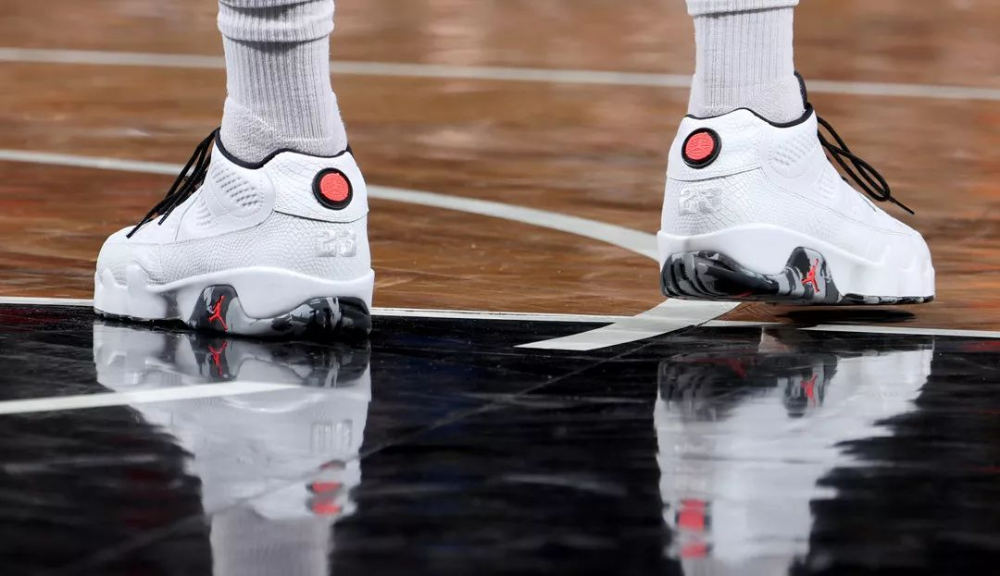

Air Jordan IX

© 1994
1994年乔丹宣布退役的时候，人们都产生了这样一个疑问，乔丹系列还会延续下去吗？事实上，耐克还是如期推出了这款独特创意的乔丹9代，就好像他们预见到乔丹将要重返赛场一样
乔丹离开了NBA赛场，让9代成为乔丹系列中第一款乔丹没有在NBA赛场上穿过的鞋。乔丹9代的设计者深刻了解乔丹对于整个篮球界和全世界篮球迷的意义，在乔丹9代上可以看出篮球世界化的影子。乔丹已经不单是美国人崇拜的英雄，更让全世界的人们为他出神入画的球技如痴如醉。 鞋跟处的飞人标志第一次和地球放在一起，象征着飞人在整个地球的上飞翔。鞋底的花纹上分别用英文，中文和日文表达了世界的意思。23在鞋底和鞋跟上出现了2次，飞人的标志更是遍布全身。 9代在于让人们在看不到乔丹的时候依然可以回忆起它的飞翔的身影
整体造型上算是比较简洁的一款，科技上没有太大的创新，还是内置气垫，前掌边缘有突出的部分，用以增加稳定性，各种带有寓意的图案组成的外底带来的就是较差的抓地性。不过设计者在舒适性上做了补偿，高至脚踝的鞋帮和圆形鞋带都对乔丹的双脚带来舒适和安全感觉。 AJ9使用了和AJ8同样的配置，前后分离sole。只不过脚感实在不敢恭维
乔丹在离开NBA的日子里曾经到职业棒球联盟找找感觉，当时他的球衣号码是45号，耐克专门为他推出了乔丹9代的棒球款式，并且限量发行了45双带有45的乔丹9代棒球款式，估计现在这双鞋已经成了天价。 乔丹9代虽然是他唯一一双没有在赛场上穿过得的乔丹鞋，
但是很多NBA球员都穿过这双球鞋，尤其是在2001年耐克推出乔丹的复刻版时，包括迈克尔·芬利，德里克·安德森和理查德·汉密尔顿在内的众多乔丹品牌签约球星都穿过这款鞋，乔丹本人也在这个赛季穿过乔丹9代灰色复刻版，也算是圆了球迷们期待乔丹9代跟随乔丹征战NBA的梦想。